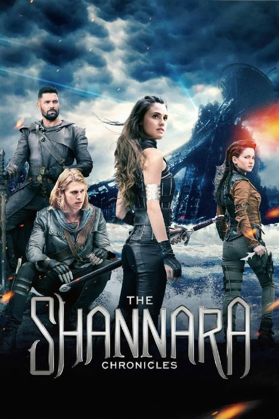

Моя вторая страница
Кто такой Терри Брукс?
Теренс Дин Брукс — североамериканский писатель, работающий в жанрах фантастика и фентези. Автор романа "Скрытая угроза".
Он родился 8 января 1944 года в городе Стерлинг, где провёл детство и юность.
В 1966 году он получил степень бакалавра в области английской литературы, окончив Гамильтонский колледж, а затем — доктора юриспруденции в Юридической школе Университета Вашингтона и Ли. Ещё в колледже он начал писать, сочинив несколько рассказов в жанре научной фантастики, вестерна и реалистической прозы.
В 1977 году он написал и опубликовал роман в жанре фэнтези — «Меч Шаннары». Сюжет романа касался последнего потомка эльфийского рода Шаннара, единственного, кто может овладеть магическим Мечом и спасти Четыре Земли от чародея Броны. По признанию самого Терри, обратиться к жанру фэнтези его вдохновили книги Джона Р.Р.Толкина.
«Меч Шаннары» стал первой книгой в этом жанре, попавшей в рейтинг бестселлеров The New York Times, в котором она продержалась более пяти месяцев. После такого успеха Брукс решил оставить свою юридическую карьеру и заниматься писательским делом профессионально. В 1982 Терри Брукс опубликовал продолжение — «Эльфийские Камни Шаннары», а «Песнь Шаннары», опубликованная в 1985 году, завершила трилогию о семействе Омсвордов.
Брукс переехал в Сиэтл и в 1986 написал книгу «Продается волшебное королевство — ПРОДАНО!», ироничную сказку о простом обывателе по имени Бен Холлидей, неожиданно ставшем повелителем целого волшебного королевства. Книга стала началом его новой серии романов о Заземелье, которую вскоре пополнили «Чёрный единорог» и «Волшебник у власти». В 1990 году Терри вернулся к Четырём Землям и написал тетралогию «Наследие Шаннары», в которой отступил от прежних сказочно-эпических канонов в сторону техномагии и пост-апокалипсиса.
В дальнейшем Терри не останавливался надолго на одной серии, перемежая Шаннару с Заземельем, что помогало ему пробовать новые идеи. Брукс — автор романа «Крюк» (1991), новеллизаций фильма Стивена Спилберга «Капитан Крюк».
В 1996 он написал роман «Первый король Шаннары», приквел ко всей эпопее, а в последнее время работает над ещё более ранним периодом истории Четырёх Земель. Также перу Терри Брукса принадлежат трилогия «тёмного» фэнтези «Слово и Пустота». Терри написал предисловие к трилогии «Долина Ледяного Ветра» Роберта Сальваторе.
Терри Брукс — лауреат Премии Геффена за 1999 и 2000 годы, Всемирной премии фэнтези за 2017 год.
5 января 2016 года на телеканале MTV стартовал сериал «Хроники Шаннары», который основан на Оригинальной Трилогии Шаннары.
Описание серии книг "Шаннара"
Серия книг "Шаннара" - серия фантастических романов Терри Брукса в жанрах эпического фэнтези и технофэнтези. Включает в себя пять циклов, поделённых на 14 романов в общей сложности. Серия также имеет связи с другим циклом Брукса — «Слово и Пустота».
Название происходит от названия эльфийского королевского рода, из которого происходят все главные герои книг, и его основателя Джерла Шаннары. Каждый цикл рассказывает о похождениях нового поколения рода Шаннары.
Серия имела большой успех в США, её первый роман, «Меч Шаннары», стал первой сказочно-фантастической книгой, попавшей в список бестселлеров The New York Times. С выходом первой трилогии Брукса многие связывают современный бум фэнтези.
Оригинальная трилогия "Шаннары"
1 книга - "Меч Шаннары" — первое крупное произведение Брукса и первая изданная книга серии. Книга рассказывает о Ши Омсворде, последнем потомке рода, и поисках Меча Шаннары, раскрывающего истину. Роман является подражанием трилогии Дж.Р.Р.Толкина «Властелин Колец».
2 книга - "Эльфийские камни Шаннары" — рассказывает о внуке Ши, Виле Омсворде, и нашествии демонов из другого мира.
3 книга - "Песнь Шаннары" рассказывает о детях Вила и поисках чёрной книги Идальч.
© Терри Брукс
Хроники Шаннары
